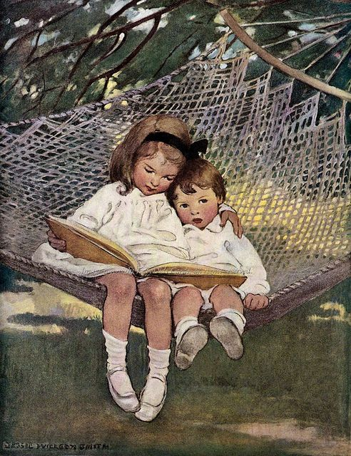
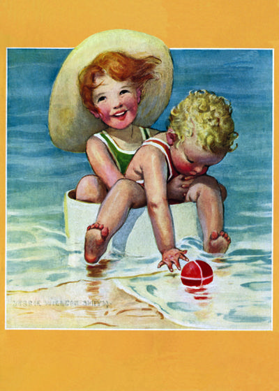
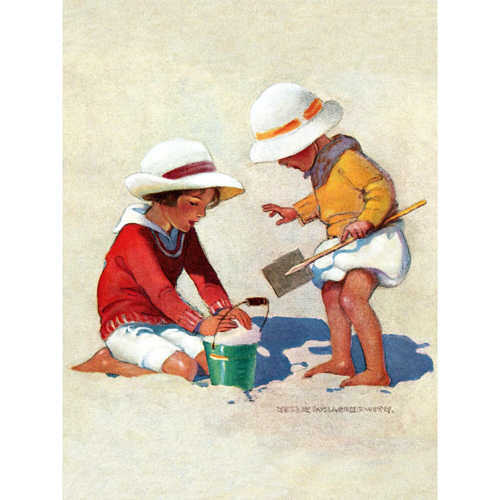

Want a handy place to plan and track your family read-alouds and traditions?
Get the Christian Read-Aloud Family Calendar! Click button below to buy.

June
Picture Books to Read Aloud: Stories About Summer, Flag Day, Juneteenth, and Fathers
The Night Before Summer Vacation by Natasha Wing
Blueberries for Sal by Robert McCloskey
The Honeybee Man by Lela Nargi
A Perfect Day by Lane Smith
Roxaboxen by Alice McLerran
Jabari Jumps by Gaia Cornwall
When You Can Swim by Jack Wong
The Raft by Jim LaMarche
Finding Wild by Megan Wagner Lloyd
Pond by Jim LaMarche
Everything You Need for a Treehouse by Carter Higgins
Red, White, and Blue: The Story of the American Flag by John Herman
I'm Your Flag So Please Treat Me Right by Julia Cook
Betsy Ross and the American Flag by Kay Melchisedech Olson
Our Flag (A Little Golden Book) by Carl Memling
Juneteenth for Maizie by Floyd Cooper
All Different Now: Juneteenth, the First Day of Freedom by Angela Johnson
Opal Lee and What It Means to Be Free by Alice Faye Duncan
Juneteenth Jamboree by Carole Boston Weatherford
Dadaji's Paintbrush by Rashmi Sirdeshpande
Just Me and Dad by Mercer Mayer
Nelly Gnu and Daddy Too by Anna Dewdney
Dad and the Dinosaur by Gennifer Choldenko
Things to Do With Dad by Sam Zuppardi
Why a Daughter Needs a Dad by Gregory Lang
Why a Son Needs a Dad by Gregory Lang
I Love My Daddy by Sebastian Braun
Night Driving by John McCoy
The Extraordinary Mark Twain (According to Susy) by Barbara Kerley
Chapter Books to Read Aloud: Stories About Summer, Flag Day, Juneteenth, and Fathers
The Penderwicks: A Summer Tale of Four Sisters, Two Rabbits, and a Very Interesting Boy by Jeanne Birdsall
A Long Walk to Water by Linda Sue Park
Misty by Marguerine Henry
Come Juneteenth by Ann Rinaldi
The Story of Juneteenth: An Interactive History Adventure by Steven Ostinoski
The Reading Promise by Alice Ozma
Gone-Away Lake by Elizabeth Enright
Return to Gone-Away Lake by Elizabeth Enright
Thimble Summer by Elizabeth Enright
Betsy Ross's Star (Blast to the Past Book 8) by Stacia Deutsch
Chitty Chitty Bang Bang by Ian Fleming
Little Britches by Ralph Moody
Little House Books by Laura Ingalls Wilder
Caddie Woodlawn by Carol Ryrie Brink
Encyclopedia Brown books by Donald Sobol
Sarah, Plain and Tall books by Patricia MacLachlan
To Kill a Mockingbird by Harper Lee, for ages 14+
The Vanderbeekers and the Hidden Garden by Karina Yan Glaser
Activities About Summer, Flag Day, Juneteenth, and Father's Day
Go on hikes, long walks, and have picnics, enjoying summer weather
Explore all the city parks in your area with friends and picnics
Go on a family road trip/vacation
Go camping
Sleep under the stars
Learn the names of constellations and go stargazing
If you can't afford the time or money for a vacation, have a staycation. Enjoy relaxing activities at home or close to home, do minimal chores, and sleep in your own beds.
Visit the National Parks in your area that your time and budget allow
Decorate your home for Flag Day and Independence Day with red, white and blue streamers, stars, and flags
Make cards and gifts for Dad for Father's Day
Serve Dad breakfast in bed on Father's Day
Host a Father's Day picnic or BBQ Dinner to honor the fathers in your life
Take a photo of Dad with all the children and one individually with each child
Tell stories of fathers from your family history or famous fathers who have done great deeds
Watch the movie Dangal
Watch the movie Finding Nemo
Watch the movie I Can Only Imagine
Watch the documentary Mulli
Host a picnic or barbecue in your backyard and invite neighbors over
Host a neighborhood block party in your front yard. Have potluck food.
Host a summer solstice party on the day of summer solistic, or or around June 21. Invite people to come over after dinner and bring a treat to share. Stay up until after the sun sets playing outdoor games.
Food for Father's Day from PWCYH (Pioneer Woman Cooks a Year of Holidays)
Toasted Ravioli p. 180
Three Meat Lasagna p. 184
Caesar Salad p. 187
Chocolate Strawberry Cake p. 191
Books for Parents to Read About Summer, Juneteenth, and Fathers
The Summer Book by Susan Branch (a cookbook that is fun to read)
Sweet Taste of Liberty: A True Story of Slavery and Restitution in America by W. Caleb McDaniel
Festivals of Freedom: Memory and Meaning in African American Emancipation Celebrations, 1808-1915 by Mitch Kachun
Envisioning Emancipation: Black Americans and the End of Slavery by Deborah Willis and Barbara Krauthamer
In My Father's House: The Years Before the Hiding Place by Corrie Ten Boom
The June chapter of the Lifegiving Home by Sally Clarkson

July
Get the Christian Read-Aloud Family Calendar! Click button below to buy.
Picture Books to Read Aloud: Stories About the American Revolution, Independence Day, Liberty, Patriotism, the United States of America, and the Founding Fathers and Mothers
A is for America by Greg Paprocki
The Story of America's Birthday by Patricia Pingry
The Night Before the Fourth of July by Natasha Wing
Yankee Doodle America: The Spirit of 1776 from A to Z by Wendell Minor
The Declaration of America The Words that Made America Illustrated and Inscribed by Sam Fink
Liberty or Death The American Revolution 1763-1783 by Betsy Maestro
Blue Sky, White Stars by Sarvinder Naberhaus
Our Flag Was Still There by Jessie Hartlan
The 4th of July Story by Alice Dalgliesh
Sleds on Boston Common by Louise Borden
The Boston Tea Party by Russell Freedman and illustrated by Peter Malone
In 1776 by Jean Marzollo
Abigail Adams by Alexandra Wallner
Leave it to Abigail! by Barb Rosenstock
George Washington's Breakfast by Jean Fritz
George Washington's Teeth by Deborah Chandra and Madeleine Comora
Revolutionary Rogues: John André and Benedict Arnold by Selene Castrovilla
Revolutionary Friends General George Washington and Marquis de Lafayette by Selene Castrovilla
By the Sword by Selene Castrovilla
Upon Secrecy by Selene Castrovilla
Let it Begin Here! by Dennis Brindell Fradin
By the Dawn's Early Light by Dennis Kroll
Purple Mountain Majesties by Barbara Young
The Scarlet Stocking Spy by Trinka Hakes Noble
You Wouldn't Want to Be an American Colonist by Jacqueline Morley
Where Was Patrick Henry on the 29th of May? by Jean Fritz
Can't You Make Them Behave King George? by Jean Fritz
Will You Sign Here John Hancock? by Jean Fritz
Why Don't You Get a Horse Sam Adams? by Jean Fritz
What's the Big Idea Ben Franklin? by Jean Fritz
And then What Happened Paul Revere? by Jean Fritz
Henry Knox Bookseller, Soldier, and Patriot by Anita Silvey
Henry and the Cannons by Don Brown
Those Rebels, Tom and John by Barbara Kerley
Worst of Friends: Thomas Jefferson, John Adams and the True Story of an American Feud by Suzanne Tripp
Duel! Burr and Hamilton's Deadly War of Words by Dennis Brindell Fradin
George and George by Rosalyn Schanzer
Saving the Liberty Bell by Megan McDonald
The Journey of the One and Only Declaration of Independence by Judith St. George
The Hatmaker's Sign a Story by Ben Franklin retold by Candace Fleming
The Midnight Ride of Paul Revere by Longfellow, illustrated by Christopher Bing
Voice of Her Own the Story of Phyllis Wheatley, Slave Poet by Kathryn Lasky
Anna Strong A Spy During the American Revolution by Sarah Glenn Marsh
Anna Strong and the Revolutionary War Culper Spy Ring by Enigma Alberti and Laura Terry
Independent Dames by Lauri Halse Anderson
Betsy Ross and the American Flag by Kay Olson
Betsy Ross and the Silver Thimble by Stephanie Greene and Diana Magnuson
From a Small Seed the Story of Eliza Hamilton
Eliza Hamilton Founding Mother by Monica Kulling
The Star Spangled Banner by Peter Spier
George Washington by Cheryl Harness
The Revolutionary John Adams by Cheryl Harness
Thomas Jefferson by Cheryl Harness
The Remarkable Benjamin Franklin by Cheryl Harness
Flags Over America by Cheryl Harness
Now & Ben: The Modern Inventions of Benjamin Franklin by Gene Barretta
When Washington Crossed the Delaware by Lynne Cheney
Purple Mountain Majesties by Barbara Young
Gingerbread for Liberty: How a German Baker Helped Win the American Revolution by Mara Rockliff
John, Paul, George, and Ben by Lane Smith
How to Make a Cherry Pie and See the U.S.A. by Marjorie Priceman
The Diane Goode Book of American Folk Tales & Songs
Our 50 States: A Family Adventure Across America by Lynne Cheney and Robin Priess Glasser
Everybody’s Revolution by Thomas Freeman
What's the Big Deal About Americans by Ruby Shamir
Chapter Books to Read Aloud: Stories About the American Revolution, Independence Day, Liberty, the United States of America, Patriotism, and the Founding Fathers and Mothers
Black Heroes of the American Revolution by Burke Davis
One Dead Spy a Hazardous Tale by Nathan Hale
Lafayette! a Hazardous Tale by Nathan Hale
Chains by Laurie Halse Anderson
Forge by Laurie Halse Anderson
Ashes by Laurie Halse Anderson
Phoebe the Spy by Judith Berry Griffin
Red Scarf Girl by Ji-Li Jiang, for ages 12+
Our Independence and the Constitution by Dorothy Canfield Fisher
Toliver's Secret by Esther Wood Brady
Answering the Cry for Freedom: Stories of African Americans and the American Revolution by Gretchen Woelfle and illustrated by R. Gregory Christie
George Washington, Spy Master: How the Americans Outspied the British and Won the Revolutionary War by Thomas B. Allen
Mr. Revere and I: Being an Account of Certain Episodes in the Career of Paul Revere, Esq., as Revealed by His Horse by Robert Lawson
Ben and Me: An Astonishing Life of Ben Franklin by his Good Mouse Amos by Robert Lawson
The Cabin Faced West by Jean Fritz
Johnny Tremain by Esther Forbes
Betsy Ross by Connie and Peter Roop
Paul Revere and the Minute Men by Dorothy Canfield Fisher
The Boy Who Carried the Flag by Jana Carson and Johanna Westerman
The Signers:The Fifty-six stories behind the Declaration of Independence by Dennis Brindell Fradin
The Founders: The 39 Stories Behind the U.S. Constitution by Dennis Brindell Fradin
Activities About the American Revolution, Independence Day, Liberty, the United States of America, Patriotism, and the Founding Fathers and Mothers
Cut 5 pointed Betsy Ross stars to decorate the table for Independence Day meals
Host or attend a patriotic sunrise service, involving the posting of the flag, patriotic speeches, reading of the Declaration of Independence, and a potluck breakfast
Invite a person who impersonates a Founding Father or Mother to come to your gathering to give a speech and answer questions about that person
Host, attend, or participate in a parade
Gather around the piano or karaoke machine and sing patriotic songs
Host or attend a picnic or BBQ. Encourage guests to wear red, white, and blue. Tell stories about patriots and encourage speeches about what liberty means.
Serve a red, white, and blue dessert such as watermelon chunks topped with whipped cream and blueberries. Put sparklers in it for candles and sing "Happy Birthday" to America.
Put one of these conversation starters under each person's plate at your Independence Day cookout. Go around the table and have each person answer the question on the paper: "Freedom Loving Conversation Starters"
Watch episode 2 of the HBO John Adams miniseries, which depicts the signing of the Declaration of Independence
Attend a demonstration, festival, or living history place that depicts American colonial living
Food for Independence Day meals and other summer picnics from PWCYH (Pioneer Woman Cooks a Year of Holidays)
Lemonade p. 198
Big Bad Burger Bar p. 202
Grilled Corn with Spicy Butter p. 206
Baked Beans p. 208
Perfect Potato Salad p. 210
My Favorite Pasta Salad p. 212
Key Lime Pie p. 214
Strawberry Ice Cream p. 216
Peach Cobbler p. 218
Books for Parents to Read About the American Revolution, Independence Day, Liberty, 1776 the United States of America, Patriotism, and the Founding Fathers and Mothers
Signing Their Lives Away The Fame and Misfortune of the Men Who Signed The Declaration of Independence by Denise Keirnan and Joseph D'Agnese
A Reasoned Patriotism: Critical Thinking and Civic Duty in an Age of Polarization by Dawn Duran
1776 by David McCullough
Common Sense by Thomas Paine
John Adams by David McCullough
Poems of Phillis Wheatley
Abigail Adams a Biography by Phyllis Lee Levin
Women in the American Revolution by Jeanne Munn Bracken
The Autobiography of Benjamin Franklin
America's Godly Heritage by David Barton
Live Not By Lies by Rod Dreher
The Naked Truth by James C. Bowers
Benjamin Rush: Signer of the Declaration of Independence by David Barton
Celebrate Liberty! Famous Patriotic Speeches & Sermons compiled by David Barton
The Spirit of the American Revolution by David Barton
The American Story the Beginning by David Barton
The Bulletproof George Washington by David Barton
The Jefferson Lies by David Barton
The Jefferson Bible by Thomas Jefferson
The Real Thomas Jefferson by Andrew Allison
The Real George Washington by Jay A. Parry and Andrew Allison
The Real Benjamin Franklin by Andrew Allison
The Notorious Benedict Arnold by Steven Sheinkin
Founding Brothers by Joseph Ellis
Founding Mothers by Cokie Roberts
Founding Friendships by Cassandra A. Good
The American Revolution: a Constitutional Conflict by Kevin R. C. Gutzman
Thomas Jefferson - Revolutionary: A Radical's Struggle to Remake America
by Kevin R.C. Gutzman
Wives of the Signers by Mary Walcott Green
Lives of the Signers of the Declaration of Independence by Benson John Lossing
The Politically Incorrect Guide to the Founding Fathers by Brion McClanahan
The July chapter of The Lifegiving Home by Sally Clarkson

August
Get the Christian Read-Aloud Family Calendar! Click button below to buy.
Picture Books to Read Aloud: Stories About Families, Family Reunions, the Beach, the Ocean and Family Vacations
The Relatives Came by Cynthia Rylant
Going Down Home With Daddy by Kelly Starling Lyons
Family Reunion by Chad and Dad Richardson
Russell Wrestles the Relatives by Cindy Johnson
Climb the Family Tree Jesse Bear by Nancy White Carlstrom
Hendry and Mudge in the Family Tree by Cynthia Rylant
Hattie Hates Hugs by Sarah Havorka
Road Trip by Roger Eschbacher
Are We There Yet, Daddy? by Virginia Walters
Secret Sisters of the Salty Sea by Lynn Rae Perkins
The Gulps by Rosemary Wells
When Lightning Comes in a Jar by Patricia Polacco
The Keeping Quilt by Patricia Polacco
Drawn Together by Minh Lee
Emma Jo's Song by Faye Gibbons
Some Kind of Love by Traci Dant
Don't Let Auntie Mabel Bless the Table by Vanessa Brantley-Newton
Ruby's Reunion Day Dinner by Angela Dalton
Tanya's Reunion by Valerie Flournoy
I Love My Family by Wade Hudson
Summer Walk by Virginia Brimhall Snow
The Napping House by Audrey Wood
The Full Moon at the Napping House by Audrey Wood
Three Days on a River in a Red Canoe by Vera Williams
Hello Ocean by Pam Munoz Ryan
Prairie Days by Patricia MacLachlan
All the World by Liz Garton Scanlon and Marla Frazee
Beach House by Deanna Caswell
Magic Beach by Alison Lester
Night of the Moonjellies by Mark Shasha
Swimmy by Leo Lionni
One Morning in Maine by Robert McCloskey
Thundercake by Patricia Polacco
Time of Wonder by Robert McCloskey
Ocean Meets Sky by the Fan Brothers
There Might be Lobsters by Carolyn Crimi
Hello Lighthouse by Sophie Blackall
A Pie is for Sharing by Stephanie Parsley Ledyard
At Night by Jonathan Bean
Sea Glass Summer by Michelle Houts
Building Our House by Jonathan Bean
Summertime in the Big Woods a My Little House Picture Book by Laura Ingalls Wilder
Hum and Swish by Matt Myers
Island Boy by Barbara Cooney
Farmhouse by Sophie Blackall
Up in Heaven by Emma Chichester Clark
The Journey by Sarah Stewart
Chapter Books to Read Aloud: Stories About Families, Family Reunions, the Beach, the Ocean and Family Vacations
The Vanderbeekers on the Road by Karina Yan Glaser
Cousins by Virginia Hamilton
Second Cousins by Virginia Hamilton
A Place to Hang the Moon by Kate Albus
Sweet Home Alaska by Carole Estby Dagg
Swiss Family Robinson by Johann David Wyss
All-of-a-Kind Family by Sydney Taylor
More of a All-of-a-Kind Family by Sydney Taylor
All-of-a-Kind Family Downtown by Sydney Taylor
All-of-a-Kind Family Uptown by Sydney Taylor
Ella of All-of-a-Kind Family by Sydney Taylor
Cheaper by the Dozen by Frank Gilberth Jr. and Ernestine Gilbreth Carey
Belles on their Toes by Frank Gilberth Jr. and Ernestine Gilbreth Carey
Five Children and It by E. Nesbit
On to Oregon by Honore Morrow
Half Magic by Edward Eager
Melendy Family series by Elizabeth Enright
Penderwick series by Jeanne Birdsall
Fairchild Family Story series by Rebecca Caudill
Little Women by Louisa May Alcott
Little Men by Louisa May Alcott
Jo's Boys by Louisa May Alcott
Rose in Bloom by Louisa May Alcott
Eight Cousins by Louisa May Alcott
Activities About Families, Family Reunions, the Beach, the Ocean and Family Vacations
Host or attend a family reunion
Host an auction at your family reunion with items cleaned out of family member's homes and donate the proceeds to charity
Host a Crazy Olympics at your family reunion or other family event with fun instead of competitive events like a backwards race or under-the-leg Frisbee toss
Act out skits depicting family stories at your family reunion, such as Grandma and Grandpa met
Have a family talent show at your family reunion
Have a cooking contest for your family reunion
Gather your family around the piano or karaoke machine for a family singalong
Go to the beach and build sandcastles and play watersports
Make a scrapbook or photobook of your family's travels
Go to a city, county, or state fair
Explore historic sites in your vicinity as a family
Make a family tree to hang on your wall going at least three generations back
Before your family vacation, draw names to play good fairy for each other, doing favors or giving gifts anonymously